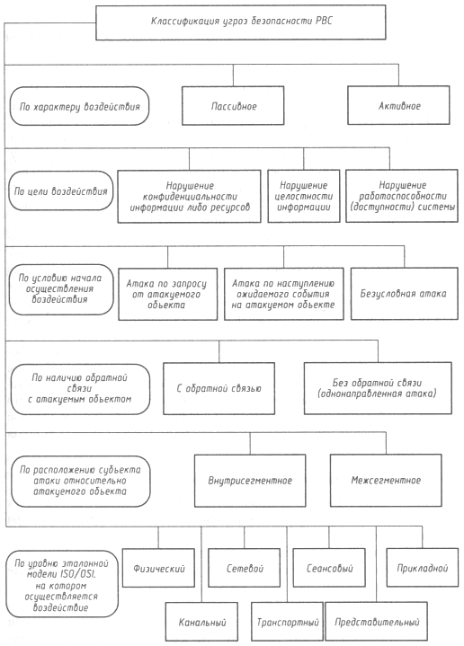

Безопасность >>>
АТАКА НА INTERNETКлассификация угроз безопасности распределенных вычислительных систем
Еще в конце 80-х - начале 90-х годов такого понятия и научного направления, как сетевая безопасность, по сути, не существовало. В те годы только зарождалось направление, связанное с компьютерной безопасностью вообще (особенно это относится к России), поэтому в научных исследованиях, посвященных анализу угроз безопасности ВС, не проводилось разделения между угрозами, специфичными для распределенных и локальных вычислительных систем. В одном исследовании, проделанном отечественными авторами [1], была предложена систематизация информационных разрушающих воздействий на ВС и рассмотрены их основные тины, в том числе описывались и классифицировались воздействия, присущие только распределенным ВС. Такой обобщенный подход к систематизации является правомочным, но, к сожалению, он не позволяет точно охарактеризовать и классифицировать воздействия, присущие именно РВС. Это связано с тем, что распределенные вычислительные системы обладают серьезными отличиями от локальных ВС. Поэтому в последующих научных работах [25, 31] применялся подход к систематизации угроз, когда из всего множества А угроз ВС (А = {ai | i=1..N}, где аi - i-я угроза ВС) рассматривалось подмножество угроз В, присущих только распределенным ВС (В = {bi | i=1..М}, где bi - i-я угроза РВС). Соответственно для данного множества угроз В предлагалась своя классификация. Однако и такой подход к систематизации не был лишен недостатков, так как все угрозы из множества В в зависимости от объекта, подвергающегося воздействию, можно разделить на следующие два подмножества:
Первые используют уязвимости в сетевых протоколах и в инфраструктуре сети, а вторые - уязвимости в телекоммуникационных службах ("дыры", программные закладки, программные ошибки). Проведенный анализ причин успеха реальных воздействий (из множества В1) на различные распределенные вычислительные системы позволил выделить основные причины, по которым возможна реализация данных угроз:
Иными словами, возможный успех атак из множества В1 обусловлен наличием в распределенной системе одной (или нескольких) из вышеназванных причин. Систематизация основных причин успеха угроз безопасности РВС позволила ввести понятие типовой угрозы безопасности РВС (из множества В1), инвариантной к типу РВС, и создать систематизацию типовых угроз безопасности РВС из множества В1, которая рассмотрена далее. Итак, перейдем к классификации угроз из выделенного множества В1. Основная цель любой классификации состоит в том, чтобы предложить такие отличительные признаки, используя которые, можно наиболее точно описать характеризуемые явления или объекты. Поскольку ни в одном из известных авторам научных исследований не проводилось различия между локальными и удаленными информационными воздействиями на ВС, применение уже известных обобщенных классификаций для описания удаленных воздействий не позволяет более или менее точно раскрыть их сущность и описать механизмы и условия их осуществления. Для более точного описания угроз безопасности РВС (из множества В1) предлагается следующая классификация (см. рис. 3.1).  Рис. 3.1. Классификация угроз безопасности РВС
1. По характеру воздействия:
Пассивным воздействием на распределенную вычислительную систему можно назвать воздействие, которое не оказывает непосредственного влияния на работу системы, но способно нарушать ее политику безопасности. Именно отсутствие непосредственного влияния на работу распределенной ВС приводит к тому, что пассивное удаленное воздействие практически невозможно обнаружить. Примером типового пассивного удаленного воздействия в РВС служит прослушивание капала связи в сети. При пассивном воздействии, в отличие от активного, не остается никаких следов (от того, что атакующий просмотрит чужое сообщение в системе, ничего не изменится). Под активным воздействием на распределенную ВС понимается воздействие, оказывающее непосредственное влияние на работу системы (изменение конфигурации РВС, нарушение работоспособности и т. д.) и нарушающее принятую в ней политику безопасности. Практически все типы удаленных атак являются активными воздействиями. Это связано с тем, что в самой природе разрушающего воздействия заложено активное начало. Очевидным отличием активного воздействия от пассивного является принципиальная возможность его обнаружения (естественно, с большими или меньшими усилиями), так как в результате его осуществления в системе происходят определенные изменения. 2. По цели воздействия:
Этот классификационный признак является прямой проекцией трех основных типов угроз: раскрытия, целостности и отказа в обслуживании. Цель большинства атак - получить несанкционированный доступ к информации. Существуют две принципиальные возможности такого доступа: перехват и искажение. Перехват - это получение информации без возможности ее искажения. Примером перехвата может служить прослушивание канала в сети. Такая атака является пассивным воздействием и ведет к нарушению конфиденциальности информации. Искажение информации означает полный контроль над информационным потоком между объектами системы или возможность передачи сообщений от имени другого объекта. Очевидно, что искажение информации ведет к нарушению ее целостности, то есть представляет собой активное воздействие. Примером удаленной атаки, цель которой - нарушение целостности информации, может служить типовая удаленная атака (УА) "ложный объект РВС". Принципиально иной целью атаки является нарушение работоспособности системы. В этом случае основная цель взломщика - добиться, чтобы операционная система на атакованном объекте вышла из строя и, следовательно, для всех остальных объектов системы доступ к ресурсам данного объекта был бы невозможен. Примером удаленной атаки, целью которой является нарушение работоспособности системы, может служить типовая атака "отказ в обслуживании". 3. По условию начала осуществления воздействия.Удаленное воздействие, как и любое другое, может начать осуществляться только при определенных условиях. В распределенных ВС существуют три вида таких условий:
В первом случае взломщик ожидает передачи от потенциальной цели атаки запроса определенного типа, который и будет условием начала осуществления воздействия. Примером подобных сообщений в ОС Novell NetWare может служить запрос SAP (атака описана в [11]), а в Internet -запросы DNS и ARP. Удаленные атаки класса 3.1 на объекты сети рассмотрены далее в главе 4. Следует отметить, что такой тип удаленных атак наиболее характерен для распределенных ВС. При осуществлении атаки класса 3.2 атакующий осуществляет постоянное наблюдение за состоянием операционной системы объекта атаки и при возникновении определенного события в этой системе начинает воздействие. Как и в предыдущем случае, инициатором начала атаки выступает сам атакуемый объект. Примером такого события может быть прерывание сеанса работы пользователя с сервером в ОС Novell NetWare без выдачи команды LOGOUT [11]. При безусловной атаке ее начало не зависит от состояния системы атакуемого объекта, то есть воздействие осуществляется немедленно. Следовательно, в этом случае его инициатором является атакующий. Пример воздействия данного вида рассмотрен в главе 4. 4. По наличию обратной связи с атакуемым объектом:
Если взломщику требуется получить ответ на некоторые запросы, переданные на объект воздействия, то есть между атакующим и целью атаки существует обратная связь, которая позволяет ему адекватно реагировать при изменении ситуации, то такое воздействие можно отнести к классу 4.1. Подобные удаленные атаки наиболее характерны для распределенных ВС. Инициатор удаленной атаки без обратной связи, напротив, не реагирует ни на какие изменения, происходящие на атакуемом объекте. Воздействие данного вида обычно осуществляется передачей на атакуемый объект одиночных запросов, ответы на которые атакующему не нужны. Примером подобных атак - их можно назвать однонаправленными - является типовая атака "отказ в обслуживании", а также атаки, рассмотренные в главе 4. 5. По расположению субъекта атаки относительно атакуемого объекта:
Рассмотрим ряд определений. Субъект атаки, или источник атаки - это атакующая программа или оператор, непосредственно осуществляющие воздействие. Хост (host) - сетевой компьютер. Маршрутизатор, или роутер (router) - устройство, обеспечивающее маршрутизацию пакетов обмена в глобальной сети. Подсеть (subnetwork в терминологии Internet) - логическое объединение, совокупность хостов, являющихся частью глобальной сети, для которых маршрутизатором выделен одинаковый номер. Хосты внутри одной подсети могут взаимодействовать непосредственно, минуя маршрутизатор. Сегмент сети (segment) - физическое объединение хостов. Например, сегменты сети образуются совокупностью хостов, подключенных к серверу по схеме "общая шина". При такой схеме подключения каждый хост имеет возможность подвергать анализу любой пакет в своем сегменте. Для осуществления удаленного воздействия чрезвычайно важно, как по отношению друг к другу располагаются субъект и объект атаки, то есть в одном или в разных сегментах они находятся. В случае внутрисегментной атаки, как следует из названия, субъект и объект атаки находятся в одном сегменте, а при межсегментной - в разных. Данный классификационный признак позволяет судить о так называемой степени удаленности атаки. Далее показано, что на практике межсегментное воздействие осуществить значительно труднее, чем внутрисегментное, но и опасность оно представляет гораздо большую. В таком случае объект и субъект атаки могут находиться на расстоянии многих тысяч километров друг от друга, что существенно усложняет возможность непосредственного обнаружения атакующего и адекватной реакции на атаку. 6. По уровню эталонной модели ISO/OSI, на котором осуществляется воздействие:
Международная организация по стандартизации (ISO) приняла стандарт ISO 7498, описывающий взаимодействие открытых систем (OSI), к которым относятся и распределенные ВС. Любой сетевой протокол обмена, как и любую сетевую программу, можно с той или иной степенью точности спроецировать на эталонную многоуровневую модель OSI. Такая проекция позволит описать в терминах модели OSI функции, заложенные в сетевой протокол или программу. Поскольку удаленная атака также является сетевой программой, представляется логичным рассматривать такие воздействия на распределенные ВС, проецируя их на эталонную модель ISO/OSI.
|